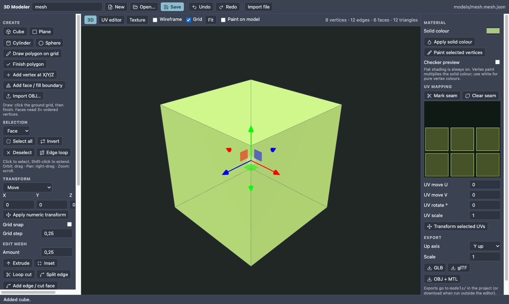

T49 Model and paint a crate (3D Modeler)
Result: a wooden-looking crate (models/crate.glb) that sits in your 3D scene. Allow 25 minutes. Start from: any 3D project (nord new lab -t 3d). Every tool is explained in the 3D Modeler chapter.
1. Open the Modeler and make the box#
- Window ▸ Editors ▸ 3D Modeler. The tab opens empty.

- Type
cratein the name box at the top. Click Cube in the left column: a cube appears.

- Selection mode Face, click the top face, set Amount to
0.25and press Inset, then set Amount-0.1and press Extrude. You now have a sunken lid. (In the picture the whole cube was inset and extruded to show the tools.)

- Press Center on ground: the crate stands on the floor at the origin.
2. Paint the texture#
- Open the Texture tab. Choose size 32, pick a brown with the colour box, press New blank.
- Use Pencil (size 1) with a darker brown for planks, Fill for areas, Mirror X for symmetric details. Turn UV overlay on: the yellow rectangles are the faces, so paint inside them.

- Back in the 3D tab tick Paint on model and paint a nail head straight onto the crate.

Use a picture instead of painting: + Add pictures… puts a PNG on the texture; move, resize, rotate and stack it with the Pictures tool. All pictures end up in the one texture.
3. Fix the UVs#
Open the UV editor tab. Click a face to select it and drag it onto a plank area of the texture. Flip U / V and Rotate 90° fix patterns that are the wrong way round; snap to texel lands exactly on pixels; Auto unwrap + Pack start over.

4. Save and use it#
- Save writes
models/crate.mesh.json(editable). Press GLB to exportmodels/crate.glb. - In your scene add an entity with a model component, set Path to
models/crate.glb. Press Play.
Check yourself: the crate is visible, the painted nail is where you drew it, and Open… in the Modeler brings back the editable mesh. Need symmetry? Mirror X after moving half the mesh away from the middle.
Reference: 3D Modeler. Next: T54 Change a model in your scene, then T50 Animator.